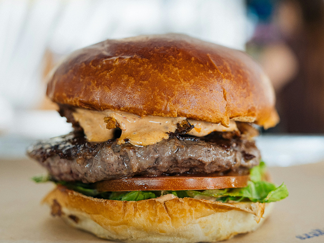

Sloppy Joes

Home
Sloppy Joes are soft burger buns filled with a flavorful mixture of ground beef, tomato sauce and spices. They are quick, messy and easy to make.
Ingredients
- 500 g ground beef
- 1 onion
- 1 bell pepper
- 400 g canned tomatoes
- 2 tbsp ketchup
- 1 tbsp mustard
- 1 tsp paprika
- Salt
- Black pepper
- 4 burger buns
Steps
- Chop the onion and bell pepper.
- Cook them in a large pan for a few minutes.
- Add the ground beef and cook until browned.
- Add the tomatoes, ketchup, mustard and spices.
- Simmer for 15 minutes.
- Toast the burger buns.
- Spoon the beef mixture onto the buns.
- Serve immediately.